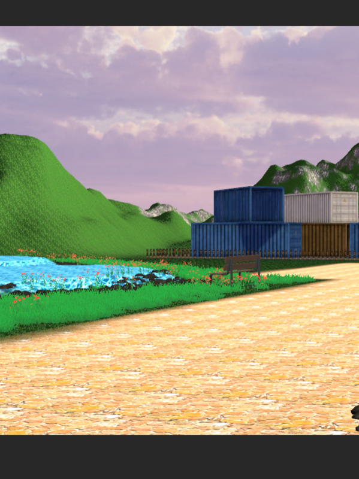
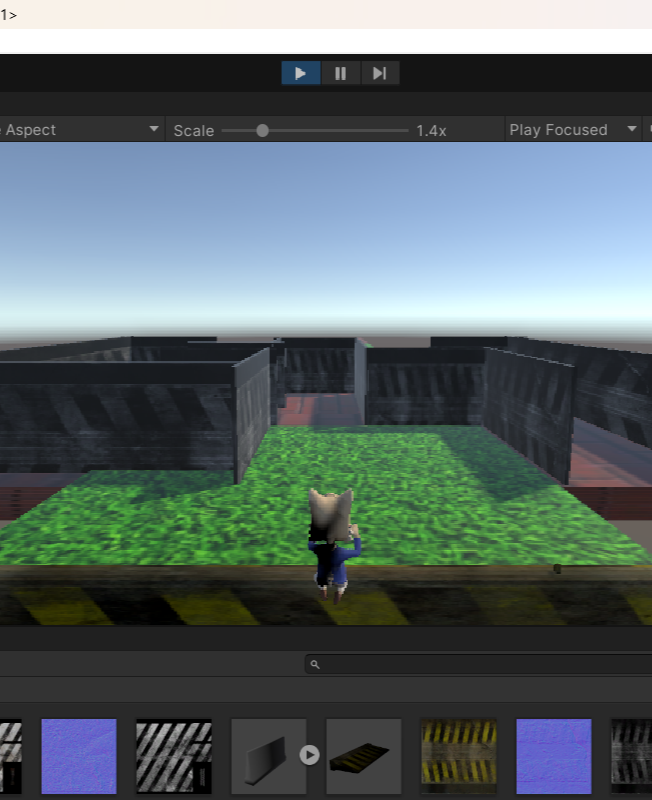

Created this Rolling Ball game using Ball movement and camera follow C# script in unity engine. All the assets were from unity store.There is Play Pause button also to stop and resume the game.
Click Below For Source Code

City Terrain
City Terrainis just a cityscape included areas like market park village in the terrain and a C# script that makes the camera movement.
Click below for Source Code

Rabbit Game
Rabbit jump is a subway surfer type game which is still under making in which i used a plane to design the platform and a rabbit which moves in all directions and jump as well .